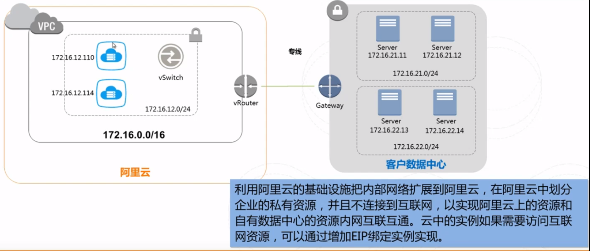

认证
与ec2进行交互的时候，需要指定认证依据，与ec2 api进行交互的时候，我们需要用到access key ID和secret access key。
环境变量
将access key ID和secret access key配置到环境变量中
export AWS_ACCESS_KEY_ID=...
export AWS_SECRET_ACCESS_KEY=...
配置文件
要想使用Ansible 所有关于EC2 的功能，需要在控制主机上安装Python Boto 类库。ansible是通过这个库与ec2进行所有功能的交互，所以只要配置好这个库，即可。
Boto配置文件是文本文件，其格式类似于.ini配置文件，该文件为控制Boto库行为的选项指定值。在Unix / Linux系统中，启动时，boto库将在以下位置按以下顺序查找配置文件：
- /etc/boto.cfg - for site-wide settings that all users on this machine will use
- (if profile is given) ~/.aws/credentials - for credentials shared between SDKs
- (if profile is given) ~/.boto - for user-specific settings
- ~/.aws/credentials - for credentials shared between SDKs
- ~/.boto - for user-specific settings
boto配置文件可能如下所示：
[Credentials]
aws_access_key_id = <your_access_key_here>
aws_secret_access_key = <your_secret_key_here>
配置ansible.cfg
配置ansible.cfg 支持使用EC2.
当使用Ansible来配置EC2实例时，我在ansible.cfg里面添加了下面几行代码：
[defaults]
remote_user=ubuntu
host_key_checking=False
含义：
在这些镜像中你应该使用ubuntu用户来进行SSH 操 作。
关闭了主机密钥检查，因为我无法事先知道新实例上的主机密钥是什么。
启动新的实例
- name: start an instance with the packered ami
hosts: localhost
gather_facts: False
tasks:
- name: start a xenial instance from a known ami
ec2:
region: us-west-1
image: ami-79df8219 # 参数表示Amazon 系统镜像（AMI）的ID
instance_type: t2.micro # 实例类型
key_name: mykey
group: [web, ssh, outbound] # 参数表示与实例关联的安全组列表。
instance_tags: #用EC2 的键值对标签的方式将元数据和实例关联在一起
Name: packer test
register: result
- debug: var=result
获得最新的AMi
Ansible 附带了一个名为ec2_ami_find的模块，该模块将根据搜索条件（如镜像名称或 者标签）检索AMI列表。
- name: find xenial image
hosts: localhost
gather_facts: False
tasks:
- name: find the image
ec2_ami_find:
name: "ubuntu/images/ebs-ssd/ubuntu-xenial-16.04-amd64-server-*"
sort: name
sort_order: descending
sort_end: 1
no_result_action: fail
register: ami
- name: output image info
debug: var=ami
镜像的名称 总是以时间戳结束,ec2_ami_find模块的name选项允许使用*作为通配符，所以我们获取最新镜像的方法 是按照名称倒序排序的，并限制只搜索一个项目。
EC2 密钥对
创建新的密钥
Amazon 不会保存私钥的副本，因此你需要在生成之后保存好它。
- name: make a keypair
hosts: localhost
gather_facts: False
tasks:
- name: create mykey
ec2_key: name=mykey region=us-west-1
register: keypair
- name: write the key to a file
copy:
dest: files/mykey.pem
content: ""
mode: 0600
when: keypair.changed # 只有状态被改变了，说明生成了新的密钥，保存密钥
- name: dump var
debug: var=keypair
上传已有密钥
安全组
在使用它们之 前用ec2_group模块来确认这些安全组是否已经被创建。
- name: create security groups
hosts: localhost
gather_facts: False
vars:
region: us-west-1
tasks:
- name: web security group
ec2_group:
region: ""
name: web
description: allow http and https access
rules:
- proto: tcp
from_port: 80
to_port: 80
cidr_ip: 0.0.0.0/0
- proto: tcp
from_port: 443
to_port: 443
cidr_ip: 0.0.0.0/0
- name: ssh security group
ec2_group:
region: ""
name: ssh
description: allow ssh access
rules:
- proto: tcp
from_port: 22 # 允许的端口起始端口
to_port: 22 # 允许的端口终止端口
cidr_ip: 0.0.0.0/0 # 允许连接的子网ip地址，使用CIDR表示法
- name: outbound group
ec2_group:
region: ""
name: outbound
description: allow outbound connections to the internet
rules_egress:
- proto: all
cidr_ip: 0.0.0.0/0
将ec2加入到群组中。
TODO
等待服务器启动
能在提交了创建EC2 实例的请求后不能立刻对它执行playbook。因为势力创建需要花费一点时间
- name: START THE INSTANCE
ec2:
region: us-west-1
image: ami-79df8219 # 参数表示Amazon 系统镜像（AMI）的ID
instance_type: t2.micro # 实例类型
key_name: mykey
group: [web, ssh, outbound] # 参数表示与实例关联的安全组列表。
instance_tags: #用EC2 的键值对标签的方式将元数据和实例关联在一起
Name: packer test
wait: yes
register:ec2
- name: wait for ssh server to be running
wait_for: host=
with_items: ""
wait_for的调用过程使用了search_regex参数在连接到主机之后查找OpenSSH 字符串。因此在创建实例task之后放上这个task，可以有效进行同步，保证全部实例被创建好之后，才继续执行。
完整的流程
下面总结一下，上面的步骤，整合成一个完整的yaml。从创建ec2实例开始
---
- name: launch webservers
hosts: localhost
vars:
region: us-west-1
instance_type: t2.micro
count: 1
tasks:
- name: ec2 keypair
ec2_key: "name=mykey key_material= region="
with_file: ~/.ssh/id_rsa.pub
- name: web security group
ec2_group:
name: web
description: allow http and https access
region: ""
rules:
- proto: tcp
from_port: 80
to_port: 80
cidr_ip: 0.0.0.0/0
- proto: tcp
from_port: 443
to_port: 443
cidr_ip: 0.0.0.0/0
- name: ssh security group
ec2_group:
name: ssh
description: allow ssh access
region: ""
rules:
- proto: tcp
from_port: 22
to_port: 22
cidr_ip: 0.0.0.0/0
- name: outbound security group
ec2_group:
name: outbound
description: allow outbound connections to the internet
region: ""
rules_egress:
- proto: all
cidr_ip: 0.0.0.0/0
- name: Get the ubuntu xenial ebs ssd AMI
ec2_ami_find:
name: "ubuntu/images/hvm-ssd/ubuntu-xenial-16.04-amd64-server-*"
region: ""
sort: name
sort_order: descending
sort_end: 1
no_result_action: fail
register: ubuntu_image
- set_fact: "ami="
- name: start the instances
ec2:
region: ""
image: ""
instance_type: ""
key_name: mykey
group: [web, ssh, outbound]
instance_tags: { Name: ansiblebook, type: web, env: production }
exact_count: ""
count_tag: { type: web }
wait: yes
register: ec2
- name: add the instance to web and production groups
add_host: hostname= groups=web,production
with_items: ""
when: item.public_dns_name is defined
- name: wait for ssh server to be running
wait_for: host= port=22 search_regex=OpenSSH
with_items: ""
when: item.public_dns_name is defined
- name: configure webservers
hosts: web:&production
become: True
gather_facts: False
vars:
ansible_python_interpreter: /usr/bin/python2.7
pre_tasks:
- name: install python
raw: apt-get install -y python2.7
roles:
- web
vpc
虚拟加密云，这个其实就相当于将数据中心搬到了云上。可以完全掌控vpc，包括自有ip范围划分、划分网段、配置路由表和网关等也可以通过vpn等连接方式将vpc与传统数据中心组合成一个按需定制的网络环境，实现应用的平滑迁移。
vpc特点：
- 完全隔离，使用隧道技术达到与传统vlan相同隔离效果的广播或者隔离在实例网卡应用。
- 软件定义网络，管理实时生效。
应用场景
资源扩展

独立vpc

混合云
ansible构建vpc
创建带有Internet路由表的两个子网的VPC。
---
- name: create vpc
hosts: localhost
gather_facts: False
vars:
region: us-west-1
tasks:
- name: create a vpc
ec2_vpc_net:
region: ""
name: "Book example"
cidr_block: 10.0.0.0/16
tags:
env: production
register: result
- set_fact: "vpc_id="
- name: add gateway
ec2_vpc_igw:
region: ""
vpc_id: ""
- name: create web subnet
ec2_vpc_subnet:
region: ""
vpc_id: ""
cidr: 10.0.0.0/24
tags:
env: production
tier: web
- name: create db subnet
ec2_vpc_subnet:
region: ""
vpc_id: ""
cidr: 10.0.1.0/24
tags:
env: production
tier: db
- name: set routes
ec2_vpc_route_table:
region: ""
vpc_id: ""
tags:
purpose: permit-outbound
subnets:
- 10.0.0.0/24
- 10.0.1.0/24
routes:
- dest: 0.0.0.0/0
gateway_id: igw
构建AMI
使用ec2 ami模块使用ec2 ami模块
ec2_ami模块会为一个正在运行的实例创建快照并将其保存成一个AMI。例14-16 列出 了一个此模块的实践案例。
- name: create am AMI
hosts: localhost
vars:
instance_id: i-e5bfc26641f1b918
tasks:
- name: create the AMI
ec2-ami:
description: Ubuntu16.64 with nginx installed
instance_id: ""
wait: yes
register:ami
- name: ouput ami details
deug: var=ami
上面是为一个实例创建一个快照